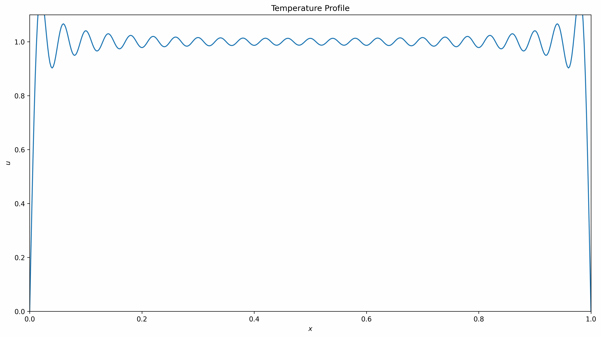
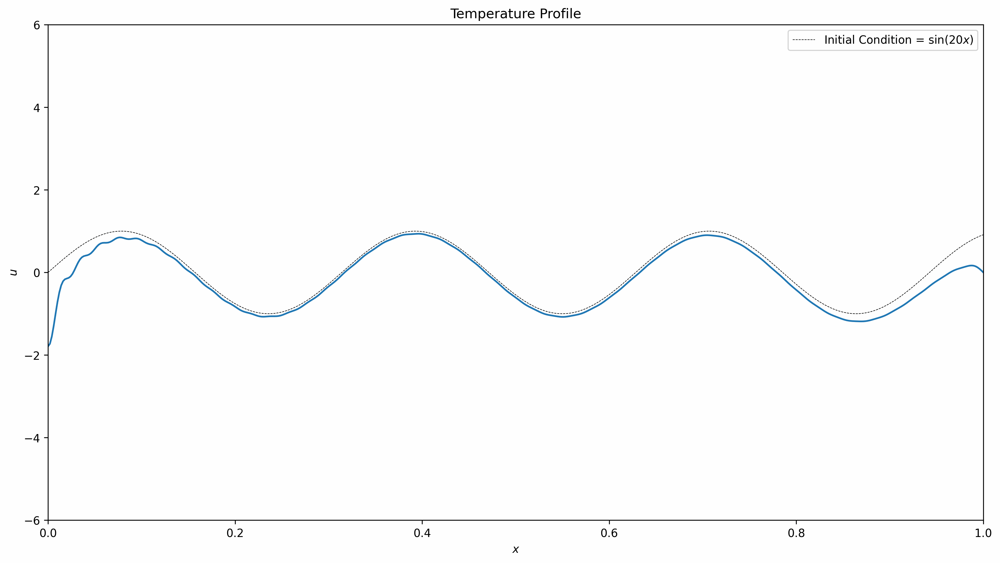

Partial Differential Equations - Eigenfunction Expansion
Contents
- Overview
- Choice of eigenfunctions based on boundary conditions
- Homogeneous PDE, homogeneous boundary conditions
- Homogeneous PDE, inhomogeneous boundary conditions
- Inhomogeneous PDE, inhomogeneous boundary conditions
- Summary
Overview
Eigenfunction expansion is a powerful method for solving PDEs that is more versatile than separation of variables -- separation of variables is typically only used for linear and homogeneous PDEs with a few exceptions, eigenfunction expansion broadens the scope a bit to include more types of inhomogeneous PDEs whose conditions and inhomogeneous terms can depend on time. The technique for eigenfunction expansion is a bit different than separation of variables: (1) based on the boundary conditions, guess a "form" that the solution will take that includes some unknowns, (2) plug that guess into the PDE to get an ODE, (3) convert all terms to the necessary Fourier series (if applicable), and (4) solve the resulting ODE and find the remaining unknown using the initial condition. When you need a little more punch that separation of variables, eigenfunction expansion is a good next step.
Choice of eigenfunctions based on boundary conditions
An important part of eigenfunction expansion is finding the right eigenfunction for your boundary conditions. Below is a list of the proper eigenfunctions to choose based on your boundary conditions.
| Boundary Conditions | Eigenfunction |
|---|---|
|
$$\begin{gathered} u(x = 0, t) = 0 \\ u(x = L, t) = 0 \end{gathered}$$ |
$$u(x, t) = \sum_{n = 1}^\infty u_n(t)\sin\left(\frac{n\pi x}{L}\right)$$ |
|
$$\begin{gathered} \left.\frac{\partial u}{\partial x}\right|_{x = 0} = 0 \\ u(x = L, t) = 0 \end{gathered}$$ |
$$u(x, t) = \sum_{n = 1, 3, 5, \ldots}^\infty u_n(t)\cos\left(\frac{n\pi x}{2L}\right)$$ |
|
$$\begin{gathered} u(x = 0, t) = 0 \\ \left.\frac{\partial u}{\partial x}\right|_{x = L} = 0 \end{gathered}$$ |
$$u(x, t) = \sum_{n = 1, 3, 5, \ldots}^\infty u_n(t)\sin\left(\frac{n\pi x}{2L}\right)$$ |
Homogeneous PDE, homogeneous boundary conditions
Like for separation of variables, the PDE that we will focus on is the heat equation. For this first example, we will copy the one used in the first separation of variables example, $$\frac{\partial u}{\partial t} = K\frac{\partial^2 u}{\partial x^2}$$
with homogeneous boundary conditions (the value at each boundary is zero) and initial condition: $$\begin{gathered} u(x=0, t) = 0 \\ u(x = L, t) = 0 \\ u(x, t = 0) = u_0 \end{gathered}$$
The steps for using eigenfunction expansion make more sense once you're used to using separation of variables, so if you're lost on the first step then please check out separation of variables. The steps for more simple PDEs are quite short:
- Based on the boundary conditions, guess a "form" that the solution will take that includes unknowns
- Plug the guess into the PDE to get an ODE
- Solve the ODE and find the remaining unknown using the initial condition
If we follow these steps, we should expect to get the same answer as the one we got when using separation of variables.
1. Based on the boundary conditions, guess a "form" that the solution will take that includes unknowns
From our experience solving PDEs using separation of variables, one thing that we see all the sime is an infinite summation of either \(\sin\left(\frac{n\pi x}{L}\right)\) or \(\cos\left(\frac{n\pi x}{2L}\right)\), depending on the boundary conditions. With our boundary conditions being homogeneous in this problem, we can immediately guess that our summation with be sines and not cosines -- thus, we can make a guess that the form of our solution is: $$u(x, t) = \sum_{n=1}^\infty u_n(t)\sin\left(\frac{n\pi x}{L}\right)$$
where \(u_n(t)\) is a function of \(t\) that we need to solve for. This guess function that we just made is called an eigenfunction.
2. Plug the guess into the PDE to get an ODE
Much like how we made an ansatz and plugged it into the PDE to solve for unknowns using separation of variables, we will do the same here, this time using our eigenfunction. This is where the method gets its name: we are expanding our eigenfunction using the PDE to find the unknowns. Doing this we get: $$\sum_{n=1}^\infty u_n'(t)\sin\left(\frac{n\pi x}{L}\right) = -\sum_{n=1}^\infty u_n(t)\left(K\frac{n^2\pi^2}{L^2}\right)\sin\left(\frac{n\pi x}{L}\right)$$
We can bring everything to one side, then factor out a \(\sin\left(\frac{n\pi x}{L}\right)\) $$\sum_{n=1}^\infty \sin\left(\frac{n\pi x}{L}\right)\left[u_n'(t) + \left(K\frac{n^2\pi^2}{L^2}\right)u_n(t)\right] = 0$$
This equation must be true for all values of \(x\), however we know that \(\sin\left(\frac{n\pi x}{L}\right)\) is only guaranteed to equal to \(0\) when \(x = 0\) or \(x = L\) for any value of \(n\). This means that the other term in brackets must equal zero. Notice, however, that the bracketed term is an ODE that can be solved using an integrating factor.
3. Solve the ODE and find the remaining unknown using the initial condition
We now have an ODE: $$u_n'(t) + \left(K\frac{n^2\pi^2}{L^2}\right)u_n(t) = 0$$
with initial condition $$u(x, t = 0) = u_0$$
This ODE can of course be solved using an integrating factor, \(\mu(t) = e^{K\frac{n^2\pi^2}{L^2}t}\), which helps us solve the ODE to get: $$u_n(t) = ce^{-K\frac{n^2\pi^2}{L^2}t}$$
Our guessed solution is now: $$u(x, t) = \sum_{n=1}^\infty ce^{-K\frac{n^2\pi^2}{L^2}t}\sin\left(\frac{n\pi x}{L}\right)$$
We can solve for the remaining unknown, \(c\), using the initial condition: $$u(x, t = 0) = u_0 = \sum_{n=1}^\infty c\sin\left(\frac{n\pi x}{L}\right)$$
As we've seen in separation of variables, \(c\) can be solved for using the formula for finding Fourier sine coefficients. This will give us: $$c = \left(-\frac{2u_0}{n\pi}\left[(-1)^n - 1\right]\right)$$
This gives us our final solution: $$\boxed{u(x, t) = \sum_{n = 1}^\infty \left(-\frac{2u_0}{n\pi}\left[(-1)^{n} - 1\right]\right)e^{-K\frac{n^2\pi^2}{L^2}t}\sin\left(\frac{n\pi x}{L}\right)}$$
which is exactly what we got when we solved this PDE using separation of variables. Below is a gif of the same solution that we obtained.
Homogeneous PDE, inhomogeneous boundary conditions
The previous example is a nice sanity check to make sure that our solution methods yield the same answers. But instead of just copying the same problems and finding the same answer, let's make it a bit more interesting. Something that eigenfunction expansion allows you to do that separation of variables doesn't is solve PDEs that have boundary conditions that depend on time, so let's explore this with an example: $$\frac{\partial u}{\partial t} = K\frac{\partial^2 u}{\partial x^2}$$
with boundary conditions and initial condition $$\begin{gathered} u(x = 0, t) = \sin(t) \\ \frac{\partial u}{\partial x}(x = L, t) = 0 \\ u(x, t = 0) = u_0 \end{gathered}$$
In this case, similar to when we had inhomogeneous boundary conditions using separation of variables, we need to make a substitution, but instead of having one steady-state function (remember \(u_{ss}(x)\)?) and one transient function, we need to have two transient functions: $$u(x, t) = \psi(x, t) + v(x, t)$$
Once we make this substitution, we can carry on solving using eigenfunction expansion. The steps for these types of problems are:
- Make a substitution that includes two transient functions and plug it into the PDE to get one ODE and one PDE
- Solve the ODE using the inhomogeneous boundary conditions and plug the result into the remaining PDE
- Based on the homogeneous boundary conditions, choose the proper eigenfunction and plug it into the PDE
- Turn all non-summed terms into Fourier series terms
- Solve the resulting ODE and find the remaining unknown using the initial condition
1. Make a substitution that includes two transient functions and plug it into the PDE to get one ODE and one homogeneous PDE
The substitution we will make is $$u(x, t) = \psi(x, t) + v(x, t)$$
Plugging this into our PDE gives us: $$\frac{\partial \psi}{\partial t} + \frac{\partial v}{\partial t} = K\frac{\partial^2 \psi}{\partial x^2} + K\frac{\partial^2 v}{\partial x^2}$$
We can take the second derivative of \(\psi(x, t)\) and set it equal to zero -- this is our ODE to solve. The rest of the terms will be kept in the PDE for us to deal with later.
2. Solve the ODE using the inhomogeneous boundary conditions and plug the result into the remaining PDE
Our ODE is a simple one to solve: $$\begin{gathered} \frac{\partial^2 \psi}{\partial x^2} = 0 \\ \Rightarrow \psi(x, t) = c_1(t)x + c_2(t)\end{gathered}$$
Notice how the constants of integration are functions of \(t\), meaning we can expect those constants to depend on \(t\) depending on what the boundary conditions are. After applying the boundary conditions we get: $$\psi(x, t) = \sin(t)$$
Let's take a look back at the PDE that we left behind after separating out the \(\psi\) double derivative: $$\frac{\partial \psi}{\partial t} + \frac{\partial v}{\partial t} = K\frac{\partial^2 v}{\partial x^2}$$
It's almost homogeneous, except for the \(\frac{\partial \psi}{\partial t}\) term. To deal with it, we need to plug in the solution we found for \(\psi(x, t)\); this gets us: $$\cos(t) + \frac{\partial v}{\partial t} = K\frac{\partial^2 v}{\partial x^2}$$
We'll come back to the \(cos(t)\) later, but for now we need to proceed with choosing our eigenfunction.
3. Based on the homogeneous boundary conditions, choose the proper eigenfunction and plug it into the PDE
As a quick reminder, our boundary conditions and initial condition for this new PDE are: $$\begin{gathered} v(x, = 0, t) = 0 \\ \left.\frac{\partial v}{\partial x}\right|_{x = L} = 0 \\ v(x, t = 0) = u_0 \end{gathered}$$
Based on these boundary conditions, we choose our eigenfunction to be: $$v(x, t) = \sum_{n = 1, 3, 5, \ldots}^\infty v_n(t)\sin\left(\frac{n\pi x}{2L}\right)$$
We can plug this eigenfunction back into the PDE to get: $$\cos(t) + \sum_{n=1, 3, 5, \ldots}^\infty v_n'(t)\sin\left(\frac{n\pi x}{2L}\right) = -\sum_{n=1, 3, 5, \ldots}^\infty v_n(t)\left(K\frac{n^2\pi^2}{4L^2}\right)\sin\left(\frac{n\pi x}{2L}\right)$$
We want to combine all the terms under one summation, but the \(\cos(t)\) is giving us issues. To remedy this, we need to represent it as a Fourier series.
4. Turn all non-summed terms into Fourier series terms
To turn \(\cos(t)\) into a Fourier series, we need to make sure that we use the proper sine or cosine eigenfunction -- this is why it is important to choose the eigenfunction for the PDE solution before turning all non-summed terms into a Fourier series. If you turn your non-summed terms into a Fourier series with an eigenfunction that doesn't match those used in the PDE solution, then you cannot perform the rest of the steps of eigenfunction expansion.
In our case, we need to turn \(\cos(t)\) into a Fourier series with the eigenfunction \(\sin\left(\frac{n\pi x}{2L}\right)\) summed over all odd values of \(n\): $$\cos(t) = \sum_{n = 1, 3, 5, \ldots}^\infty G_n(t)\sin\left(\frac{n\pi x}{2L}\right)$$
where \(G_n(t)\) is the Fourier sine coefficient, which is now a function of \(t\). \(G_n(t)\) can be found using the formula for finding Fourier sine coefficients: $$\begin{aligned} G_n(t) &= \frac{2}{L}\int_0^L \cos(t)\sin\left(\frac{n\pi x}{2L}\right)dx \\ &= \frac{2}{L}\cos(t)\left[-\frac{2L}{n\pi}\left.\cos\left(\frac{n\pi x}{2L}\right)\right|_0^L\right] \\ &= \frac{4\cos(t)}{n\pi} \end{aligned}$$
meaning that \(cos(t)\) as the proper Fourier series for our problem is: $$\cos(t) = \sum_{n = 1, 3, 5, \ldots}^\infty\left(\frac{4\cos(t)}{n\pi}\right)\sin\left(\frac{n\pi x}{2L}\right)$$
Our PDE can now have all the terms combined under one summation: $$\sum_{n = 1, 3, 5, \ldots}^\infty \sin\left(\frac{n\pi x}{2L}\right)\left[v_n'(t) + \left(K\frac{n^2\pi^2}{4L^2}\right)v_n(t) + \frac{4\cos(t)}{n\pi}\right] = 0$$
We can solve the ODE in the brackets: $$v_n'(t) + \left(K\frac{n^2\pi^2}{4L^2}\right)v_n(t) + \frac{4\cos(t)}{n\pi} = 0$$
5. Solve the resulting ODE and find the remaining unknown using the initial condition
Using an integrating factor, the solution to the ODE is: $$v_n(t) = -\frac{4}{n\pi}I(t) + ce^{-K\frac{n^2\pi^2}{4L^2}t}$$
where $$I(t) = \frac{4Kn^2\pi^2L^2}{K^2n^4\pi^4+16L^4}\left[\cos(t) + \frac{4L^2}{Kn^2\pi^2}\sin(t)\right]$$
Our \(v(x, t)\) solution is thus: $$v(x, t) = \sum_{n = 1, 3, 5, \ldots}^\infty \left[-\frac{4}{n\pi}I(t) + ce^{-K\frac{n^2\pi^2}{4L^2}t}\right]\sin\left(\frac{n\pi x}{2L}\right)$$
We can solve for the remaining unknown, \(c\), using the initial condition to get: $$c = \frac{4}{n\pi}I(0) + \frac{4u_0}{n\pi}$$
With this, our full solution to the PDE is: $$\boxed{u(x, t) = \sin(t) + \sum_{n = 1, 3, 5, \ldots}^\infty \left[-\frac{4}{n\pi}I(t) + \left(\frac{4}{n\pi}I(0) + \frac{4u_0}{n\pi}\right)e^{-K\frac{n^2\pi^2}{4L^2}t}\right]\sin\left(\frac{n\pi x}{2L}\right)}$$
where $$\boxed{I(t) = \frac{4Kn^2\pi^2L^2}{K^2n^4\pi^4+16L^4}\left[\cos(t) + \frac{4L^2}{Kn^2\pi^2}\sin(t)\right]}$$
Below is a gif of the solution that we obtained. We are now able to describe systems where the boundary conditions depend on time -- I think this is where PDEs start getting really cool, because you can really start to see the dynamics of a system over time.

Inhomogeneous PDE, inhomogeneous boundary conditions
The last example for this section is a PDE with a time-dependent inhomogeneous term: $$\frac{\partial u}{\partial t} = K\frac{\partial^2 u}{\partial x^2} + \sin(10t)$$
with boundary conditions and initial condition: $$\begin{gathered} \left.\frac{\partial u}{\partial x}\right|_{x = 0} = \sin(2t) \\ u(x = L, t) = \sin(t) + \frac{1}{3}\sin(10t) \\ u(x, t = 0) = \sin(20x)\end{gathered}$$
This one has lots of sines, mostly because I think it makes a cool looking graph at the end. The procedure for this one will be exactly the same as the previous example:
- Make a substitution that includes two transient functions and plug it into the PDE to get one ODE and one PDE
- Solve the ODE using the inhomogeneous boundary conditions and plug the result into the remaining PDE
- Based on the homogeneous boundary conditions, choose the proper eigenfunction and plug it into the PDE
- Turn all non-summed terms into Fourier series terms
- Solve the resulting ODE and find the remaining unknown using the initial condition
This is a pretty long solution, so if you're trying to solve these yourself, hang in there!
1. Make a substitution that includes two transient functions and plug it into the PDE to get one ODE and one PDE
We begin by making the substitution: $$u(x, t) = \psi(x, t) + v(x, t)$$
Plugging this into our PDE gives us: $$\frac{\partial \psi}{\partial t} + \frac{\partial v}{\partial t} = K\frac{\partial^2 \psi}{\partial x^2} + K\frac{\partial^2 v}{\partial x^2} + \sin(10t)$$
We can separate out the second derivative of \(\psi(x, t)\) to solve in the next step: $$K\frac{\partial^2 \psi}{\partial x^2} = 0$$
2. Solve the ODE using the inhomogeneous boundary conditions and plug the result into the remaining PDE
The ODE for \(\psi(x, t)\) is: $$K\frac{\partial^2 \psi}{\partial x^2} = 0$$
with boundary conditions: $$\begin{gathered} \left.\frac{\partial \psi}{\partial x}\right|_{x = 0} = \sin(2t) \\ \psi(x = L, t) = \sin(t) + \frac{1}{3}\sin(10t) \end{gathered}$$
The solution to the ODE is: $$\psi(x, t) = \sin(2t)(x - L) + \sin(t) + \frac{1}{3}\sin(10t)$$
While we're here, let's take the derivative of \(\psi(x, t)\) with respect to time, which is needed for the next step: $$\frac{\partial \psi}{\partial t} = 2\cos(2t)(x - L) + \cos(t) + \frac{10}{3}\cos(10t)$$
3. Based on the homogeneous boundary conditions, choose the proper eigenfunction and plug it into the PDE
With the \(\frac{\partial \psi}{\partial t}\) that we found, our PDE is now: $$2\cos(2t)(x - L) + \cos(t) + \frac{10}{3}\cos(10t) + \frac{\partial v}{\partial t} = K\frac{\partial^2 v}{\partial x^2} + \sin(10t)$$
with boundary conditions and initial condition: $$\begin{gathered} \left.\frac{\partial v}{\partial x}\right|_{x = 0} = 0 \\ v(x = L, t) = 0 \\ v(x, t = 0) = \sin(20x) \end{gathered}$$
To save both time and space when writing this out, let's make the substitution: $$A(t) = \cos(t) + \frac{10}{3}\cos(10t) - \sin(10t)$$
which gives us the PDE: $$A(t) + 2\cos(2t)(x - L) + \frac{\partial v}{\partial t} = K\frac{\partial^2 v}{\partial x^2}$$
Based on our boundary conditions, we can now choose the proper eigenfunction: $$v(x, t) = \sum_{n = 1, 3, 5, \ldots}^\infty v_n(t)\cos\left(\frac{n\pi x}{2L}\right)$$
Plugging the eigenfunction into our PDE gives us: $$A(t) + 2\cos(2t)(x - L) + \sum_{n = 1, 3, 5, \ldots}^\infty v_n'(t)\cos\left(\frac{n\pi x}{2L}\right) = -\sum_{n = 1, 3, 5, \ldots}^\infty v_n(t)\left(K\frac{n^2\pi^2}{4L^2}\right)\cos\left(\frac{n\pi x}{2L}\right)$$
Again, we need the non-summed terms to be represented as the proper Fourier series to combine everything under one summation.
4. Turn all non-summed terms into Fourier series terms
We need to represent \(A + 2\cos(2t)(x - L)\) as a Fourier cosine series summed over all odd values of \(n\): $$A(t) + 2\cos(2t)(x - L) = \sum_{n = 1, 3, 5, \ldots}G_n(t)\cos\left(\frac{n\pi x}{2L}\right)$$
After a lengthy integral, we find that the value of \(G_n(t)\) is: $$G_n(t) = -\frac{16L\cos(2t)}{n^2\pi^2} + \frac{4A(t)}{n\pi}(-1)^{n + 2}$$
Replacing \(A(t) + 2\cos(2t)(x - L)\) in the PDE with this Fourier cosine series, we get: $$\sum_{n = 1, 3, 5, \ldots}^\infty \cos\left(\frac{n\pi x}{2L}\right)\left[v_n'(t) + \left(K\frac{n^2\pi^2}{4L^2}\right)v_n(t) + \left(-\frac{16L\cos(2t)}{n^2\pi^2} + \frac{4A(t)}{n\pi}(-1)^{n + 2}\right)\right] = 0$$
We can extract the ODE in brackets to solve separately: $$v_n'(t) + \left(K\frac{n^2\pi^2}{4L^2}\right)v_n(t) + \left(-\frac{16L\cos(2t)}{n^2\pi^2} + \frac{4A(t)}{n\pi}(-1)^{n + 2}\right) = 0$$
5. Solve the resulting ODE and find the remaining unknown using the initial condition
The ODE to solve is: $$v_n'(t) + \left(K\frac{n^2\pi^2}{4L^2}\right)v_n(t) + \left(-\frac{16L\cos(2t)}{n^2\pi^2} + \frac{4A(t)}{n\pi}(-1)^{n + 2}\right) = 0$$
The ODE can be solved using an integrating factor and lots and lots of integration by parts. Long story short, this integral is not very friendly. The solution is below: $$v_n(t) = I_1(t) + \frac{4}{n\pi}(-1)^{n+2}\left[I_2(t) + I_3(t) - I_4(t)\right] + ce^{-K\frac{n^2\pi^2}{4L^2}t}$$
where $$\begin{gathered} I_1(t) = -\frac{64KL^3}{K^2n^4\pi^4 + 64L^4}\left(\cos(2t) + \frac{8L^2}{Kn^2\pi^2}\sin(2t)\right) \\ I_2(t) = \frac{4Kn^2\pi^2L^2}{K^2n^4\pi^4 + 16L^4}\left(\cos(t) + \frac{4L^2}{Kn^2\pi^2}\sin(t)\right) \\ I_3(t) = \frac{40Kn^2\pi^2L^2}{3K^2n^4\pi^4 + 4800L^4}\left(\cos(10t) + \frac{40L^2}{Kn^2\pi^2}\sin(10t)\right) \\ I_4(t) = \frac{4Kn^2\pi^2L^2}{K^2n^4\pi^4 + 1600L^4}\left(\sin(10t) + \frac{40L^2}{Kn^2\pi^2}\cos(t)\right) \\ \end{gathered}$$
and our \(v(x, t)\) becomes: $$v(x, t) = \sum_{n = 1, 3, 5, \ldots}^\infty \left[I_1(t) + \frac{4}{n\pi}(-1)^{n+2}\left[I_2(t) + I_3(t) - I_4(t)\right] + ce^{-K\frac{n^2\pi^2}{4L^2}t}\right]\cos\left(\frac{n\pi x}{2L}\right)$$
We can find the value of \(c\) by using the formula for finding Fourier cosine coefficients: $$c = -I_1(0) - \frac{4}{n\pi}(-1)^{n+2}\left[I_2(0) + I_3(0) - I_4(0)\right] + \frac{1}{L}\left(\frac{\cos\left[L\left(\frac{n\pi}{2L} + 20\right)\right] - 1}{\frac{n\pi}{2L} + 20} + \frac{\cos\left[L\left(\frac{n\pi}{2L} - 20\right)\right] - 1}{\frac{n\pi}{2L} - 20}\right)$$
So, after lots of pain and suffering, our solution is: $$\boxed{u(x, t) = \sin(2t)(x - L) + \sin(t) + \frac{1}{3}\sin(10t) + \sum_{n = 1, 3, 5, \ldots}^\infty \left[I_1(t) + \frac{4}{n\pi}(-1)^{n+2}\left[I_2(t) + I_3(t) - I_4(t)\right] + ce^{-K\frac{n^2\pi^2}{4L^2}t}\right]\cos\left(\frac{n\pi x}{2L}\right)}$$
where $$\boxed{\begin{gathered} I_1(t) = -\frac{64KL^3}{K^2n^4\pi^4 + 64L^4}\left(\cos(2t) + \frac{8L^2}{Kn^2\pi^2}\sin(2t)\right) \\ I_2(t) = \frac{4Kn^2\pi^2L^2}{K^2n^4\pi^4 + 16L^4}\left(\cos(t) + \frac{4L^2}{Kn^2\pi^2}\sin(t)\right) \\ I_3(t) = \frac{40Kn^2\pi^2L^2}{3K^2n^4\pi^4 + 4800L^4}\left(\cos(10t) + \frac{40L^2}{Kn^2\pi^2}\sin(10t)\right) \\ I_4(t) = \frac{4Kn^2\pi^2L^2}{K^2n^4\pi^4 + 1600L^4}\left(\sin(10t) + \frac{40L^2}{Kn^2\pi^2}\cos(t)\right) \\ \end{gathered}}$$
and $$\boxed{c = -I_1(0) - \frac{4}{n\pi}(-1)^{n+2}\left[I_2(0) + I_3(0) - I_4(0)\right] + \frac{1}{L}\left(\frac{\cos\left[L\left(\frac{n\pi}{2L} + 20\right)\right] - 1}{\frac{n\pi}{2L} + 20} + \frac{\cos\left[L\left(\frac{n\pi}{2L} - 20\right)\right] - 1}{\frac{n\pi}{2L} - 20}\right)}$$
Below is a gif of the solution we obtained. To be honest, this was a pretty tough PDE to solve, mostly because the number of integrals was bordering cruel and unusual punishment. The final result looks kinda cool though, so it was at least a little bit worth it.
Summary
Eigenfunction expansion is a powerful method for solving PDEs because it can tackle ones with time-dependent boundary conditions and time-dependent forcing terms that separation of variables can't do in most situations (the extra \(\frac{\partial \psi}{\partial t}\) and/or forcing terms make separation of variables impossible in most cases because the terms become inseparable). If your PDE is getting a bit difficult (or impossible) to solve using separation of variables, eigenfunction expansion may be the next tool you take out of your math toolbox.